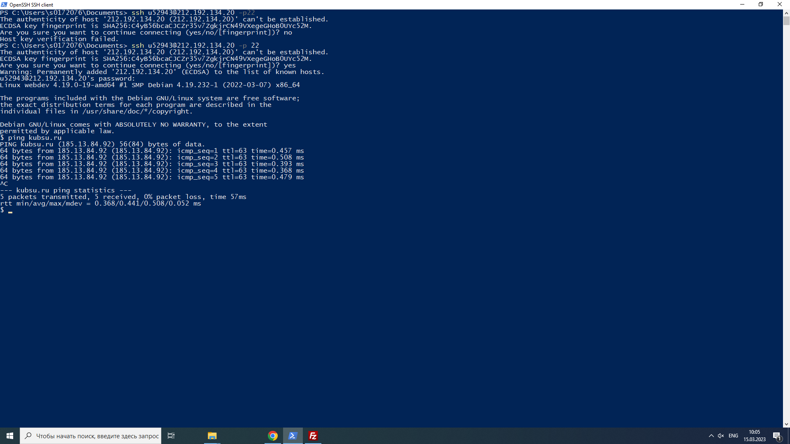
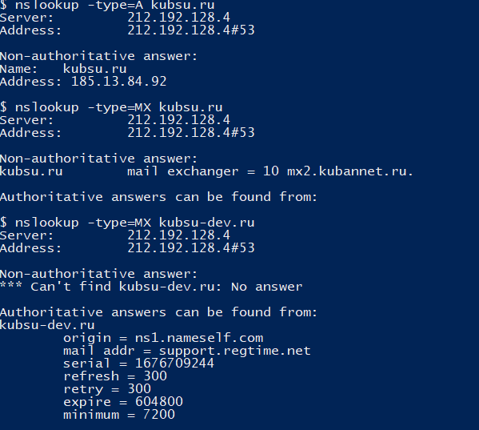
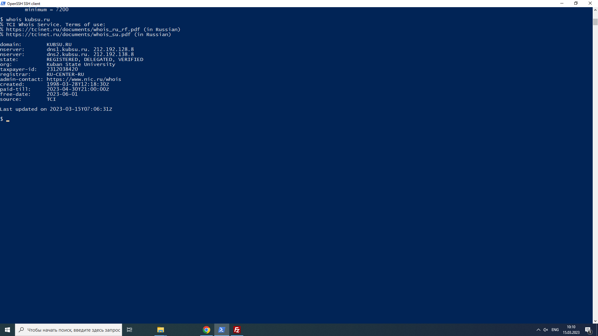
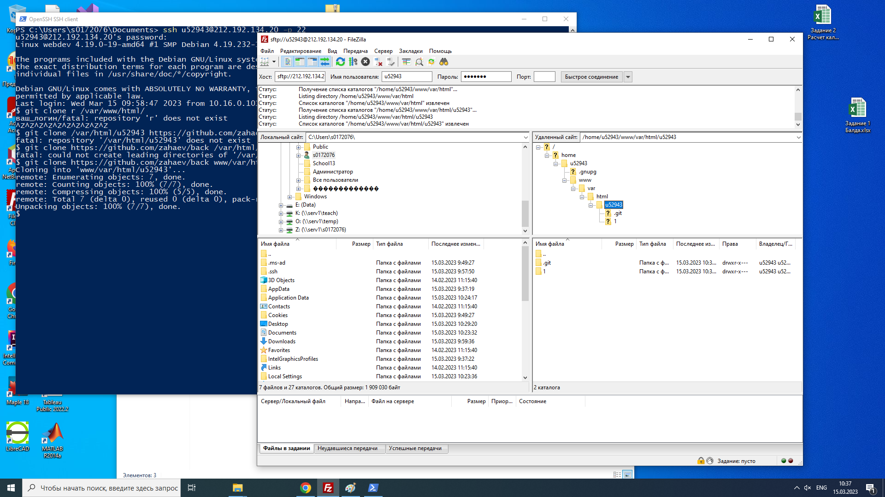

ping используется для устранения неполадок подключения, доступности и разрешения имени. Она также позволяет узнать имя и IP-адрес компьютера.

nslookup предназначена для формирования запросов к серверам DNS из командной строки
В nslookup -type=A kubsu.ru Server означает IP-адрес DNS-сервера, а затем выводится информация об IP-адресе домена
В nslookup -type=MX kubsu.ru хранит соответствие доменного имени почтовому серверу этого домена.
В nslookup -type=MX kubsu-dev.ru содержит информацию о зоне домена, адрес его администратора, серийный номер и т.д

whois – получение в текстовом виде регистрационных данных о владельцах IP адресов и доменных имен.
Запись о домене обычно содержит имя и контактную информацию владельца домена и организации, которая домен зарегистрировала,
имена DNS серверов, дату регистрации и дату истечения срока ее действия.

filezilla
